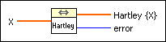

FHT VI
Owning Palette: Transforms VIs
Requires: Full Development System
Computes the fast Hartley transform (FHT) of the input sequence X.
The number of elements in the input sequence X must be a valid power of two.

 Add to the block diagram Add to the block diagram |
 Find on the palette Find on the palette |